Getting Started¶
This tutorial is intended to give new users a first taste of lighting and rendering in Gaffer. As such it will cover a lot of ground quickly and will necessarily gloss over some details. Our goal is to learn to make images as quickly as possible, and provide a minimal basis for further exploration using the rest of this guide. Hold on tight!
Note
This tutorial uses the open source Appleseed renderer, as it is included with Gaffer and is ready to run out of the box. The Appleseed specific nodes that are used here can be substituted with direct equivalents for Arnold or 3delight, but we do recommend that you complete the tutorial using Appleseed before flying solo with your renderer of choice.
Launching Gaffer¶
After completing the installation chapter, launch Gaffer from a shell with the following command :
> gaffer
You should be presented with the default UI layout.
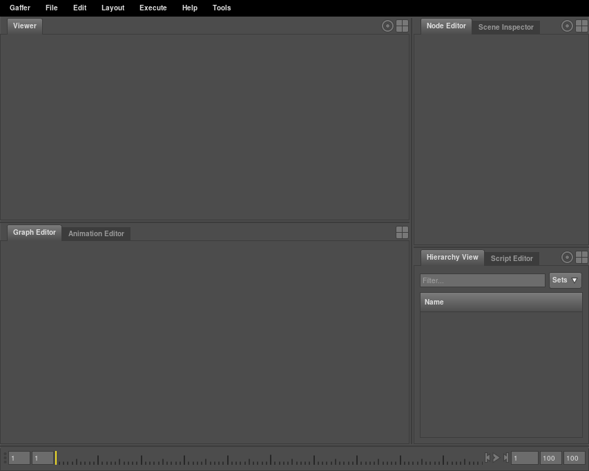
Loading some geometry¶
As Gaffer is primarily a lighting package, it is expected that modelling and animation will be performed in an external package and then imported into Gaffer in the form of an animation cache. Gaffer supports the popular Alembic and USD file formats, and also its own native SceneCache (.scc) format.
Let’s start by creating a SceneReader node to load some geometry :
- Locate the GraphEditor editor in the lower left pane.
- Right-Click inside the GraphEditor to pop up a menu for creating nodes.
- Create a SceneReader using the /Scene/File/Reader menu item.
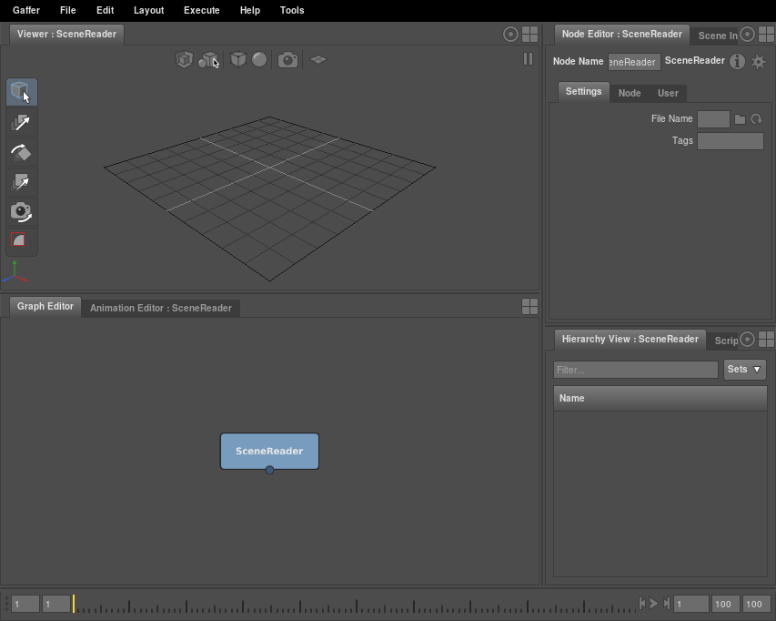
The newly created node has been selected automatically, and each of the editor panes has been updated to show the selection. We haven’t yet specified a cache to load though, so there’s not much to see. Let’s remedy that.
- Locate the NodeEditor in the top right pane.
- Enter
${GAFFER_ROOT}/resources/gafferBot/caches/gafferBot.sccinto the File Name field. - Move the mouse into the Viewer in the top left pane and press ‘f’ to frame the full scene.
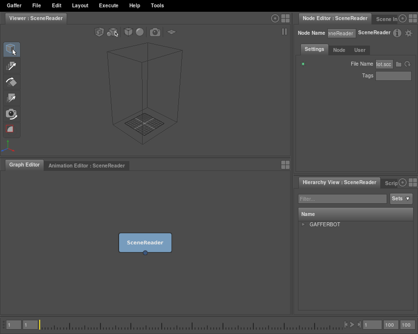
Something seems to be happening, but frankly not much. The HierarchyView in the bottom right pane has updated to show we have a “GAFFERBOT” located at the root of our scene, and the Viewer in the top left is showing a mysterious new bounding box. It seems that our SceneReader is loading something, but how do we find out what exactly?
Tip
As mentioned above, by default the UI updates to view the currently selected node. This can be confusing if you accidentally deselect a node, because the editors will go blank. Later on we’ll see various ways of managing which node is viewed, but for now it is enough to know that you can reselect a node by Left-Clicking on it in the GraphEditor.
Making a camera¶
Before we can render anything, we’ll need a camera to render from. Just as we created a SceneReader node to load in the model, we’ll create another node to generate a camera. You’ll remember from the previous section that we can create nodes by making a Right-Click inside the GraphEditor and finding the node we want in the menu that appears. This time though, we’ll take a shortcut :
- Make sure the mouse is inside the GraphEditor.
- Press Tab to show the node menu, and note that it has a search field at the top, which already has the keyboard focus.
- Type “Camera” into the search field. Note that a new submenu has appeared showing the search results.
- Press Return to activate the highlighted search result and create a Camera node.
As before, our newly created node has been selected automatically, and the UI has updated to show the selection.
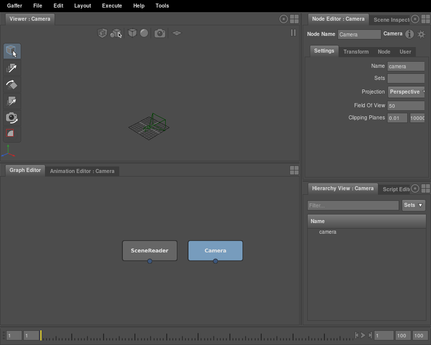
We appear to have a problem though - although we can see our new camera, our model has disappeared!
Note
Many users find that the Tab node search shortcut makes them more productive, but it can also be useful to browse the full menu to explore all the nodes that are available. For the rest of this tutorial, we’ll just say “Create a SceneReader node (/Scene/File/Reader)” and expect you to make your own choice as to which method you use.
Grouping the camera with the model¶
Each node in Gaffer outputs an entire self contained scene. Our SceneReader node is outputting a robot scene, and our Camera node is outputting a scene containing a camera, but each of these are separate. By Left-Clicking on each node in the GraphEditor we can select which scene we want to view and edit, but before we can render we need to combine them into a scene with both a robot and a camera.
Gaffer allows scenes to be modified by making connections between nodes so that input scenes flow into a node, are modified, and then flow out again. The inputs and outputs of nodes are called plugs, and are represented in the GraphEditor as circles on the edges of the nodes. Let’s make a new node and connect it up so that it combines the robot and camera into a single scene.
- Deselect all nodes by Left-Clicking in empty space in the GraphEditor.
- Create a Group node (/Scene/Hierarchy/Group).
- Arrange the nodes by Left-Dragging them into position.
- Place the SceneReader at the top left.
- Place the Camera at the top right.
- Place the Group below them.
- Left-Drag from the output of the SceneReader onto the input of the Group. Note that a second input appears on the Group.
- Left-Drag from the output of the Camera onto the second input of the Group.
- Select the Group node by Left-Clicking on it.
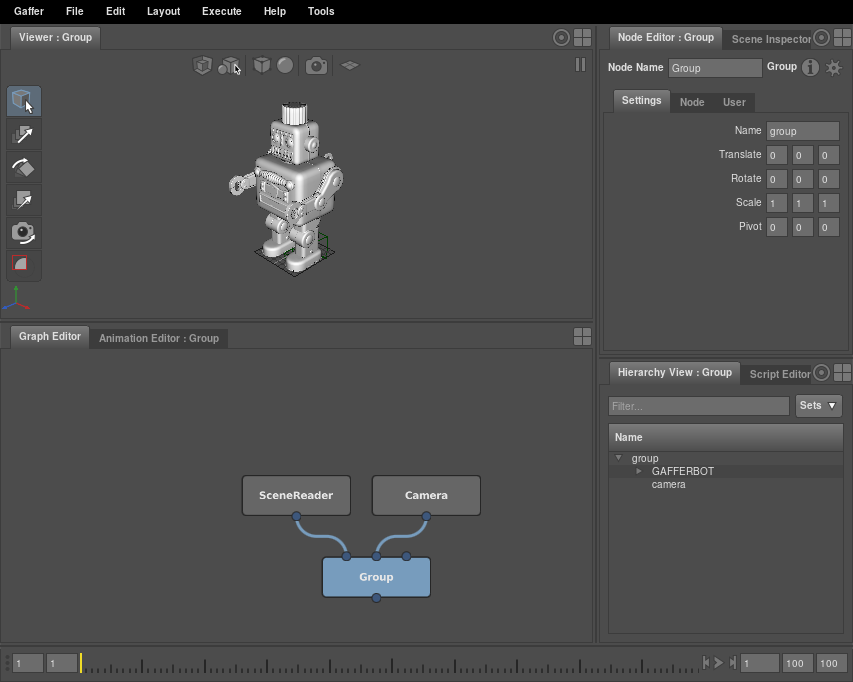
The Group node is generating a new scene which combines the input scenes by placing them both under a new parent called “group”, as can be seen in the HierarchyView in the bottom right panel. Note that this is an entirely non-destructive process, and the upstream scenes from the SceneReader and Camera nodes are still available at any time simply by selecting the relevant node.
Positioning the camera¶
Next we need to position the camera so that it frames our subject :
- Select the Camera node by Left-Clicking on it in the GraphEditor.
- In the NodeEditor (top right panel), Left-Click on the Transform tab to expose the transform settings.
- Use the numeric widgets to set the camera position.
- Set Translate to
19, 13, 31 - Set Rotate to
0, 30, 0
- Set Translate to
- Reselect the Group node in the GraphEditor to see the position of the camera relative to the robot.

Note
In the previous section we referred to the inputs and outputs of the nodes as plugs, and connected them by dragging and dropping within the GraphEditor. But in fact, the Translate and Rotate values we have just edited on the Camera node are also plugs : they also provide input to the node, and can also be connected together if needed. The GraphEditor and NodeEditor each display only a subset of the available plugs for ease of use, and informally we may tend to refer to them as “connections” or “settings” respectively, but more formally they are all plugs. This fact will become more relevant in advanced tutorials involving expressions and scripting.
Rendering a first image¶
Now that we have the layout of our scene defined, we want to do a quick test render to check everything is working as expected. To do that we need to lay down some more nodes to define our render settings.
- Select the Group node in the GraphEditor.
- Create a StandardOptions node (/Scene/Globals/StandardOptions). Note that it has been automatically connected to the output of the Group, and selected.
- Create an AppleseedOptions node (/Appleseed/Options). Note that it has been automatically connected to the output of the StandardOptions node and selected.
- Create an Outputs node (Scene/Globals/Outputs). This too will be automatically added to the end of the chain.
- Create an InteractiveAppleseedRender node (/Appleseed/InteractiveRender/) to complete the chain.
- Create a Catalogue node (/Image/Utility/Catalogue). This doesn’t need any input connections - just place it to one side of the InteractiveAppleseedRender node.
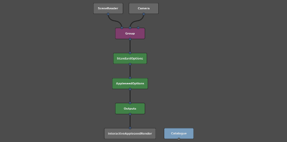
Even though we need only have one camera, we still need to tell Gaffer that we wish to render with it, rather than with a default camera :
- Select the StandardOptions node.
- Use the NodeEditor to specify the camera.
- Open the Camera section by Left-Clicking on it.
- Left-Click the switch to enable the camera setting.
- Type
/group/camerainto the camera text field.
Next we need to define what images we want to output :
- Select the Outputs node.
- Use the NodeEditor to add an output, by Left-Clicking on the and choosing the /Interactive/Beauty item from the popup menu.
Now we can start the renderer :
- Select the InteractiveAppleseedRender node.
- Use the NodeEditor to set the renderer state to running.
And finally we can view the result :
- Select the Catalogue node.
- Move the mouse into the Viewer and press ‘f’ to frame the image.
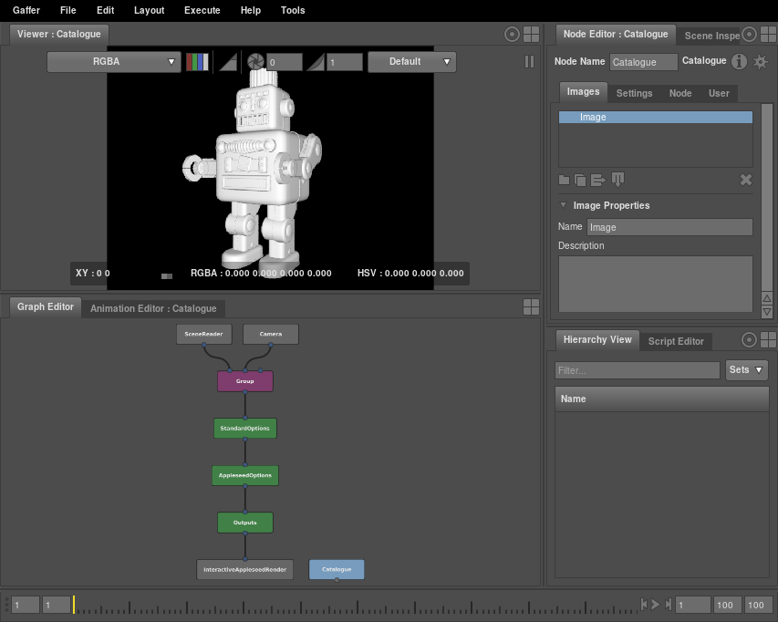
It’s hardly worthy of an Oscar, but we’ve successfully made our first image, and are in a good place to start adding some lighting and shading.
Organising the user interface¶
Before we dive into lighting and shading though, let’s take a brief detour to reorganise the user interface a little better for our workflow. As we’ve already learned, editors such as the Viewer, NodeEditor and HierarchyView always show the currently selected node by default. This isn’t always convenient, because often we want to edit one node while viewing the effects in another. This can be achieved by “pinning” specific nodes into an editor, so that they stay there regardless of the selection :
- Select the InteractiveAppleseedRender node by Left-Clicking on it in the GraphEditor.
- Locate the pinning icon at the top right of the Viewer panel, and Left-Click to activate it.
- Deselect the InteractiveAppleseedRender node by Left-Clicking in empty space in the GraphEditor.
- Note that the Viewer is still showing the pinned node.
It’d be useful to pin the same node into the HierarchyView, so let’s use a shortcut to do that :
- Middle-Drag the InteractiveAppleseedRender node from the GraphEditor panel into the HierarchyView panel.
- Note that the HierarchyView is now showing our node, and the pinning icon has highlighted to notify us of the pinning .
Now we’re free to select any node we want to edit it in the NodeEditor, but will always be viewing the results downstream, in our final scene. It’s a pity that we’re no longer viewing our Catalogue node containing the rendered image though, so let’s rectify that.
- Locate the layout button in the top right of the Viewer panel, and Left-Click to show the layout menu.
- Choose the Viewer menu item to add a new Viewer.
- Middle-Drag the Catalogue node into the new Viewer to pin it there.
This allows us to switch between the 3d scene and the rendered image using the tabs at the top of the viewer panel. Now we’ve got everything arranged to our liking, we’re finally ready to go ahead and start shading some pixels.
Assigning a shader¶
Tip
As we’re about to add to our collection of nodes in the GraphEditor, we might need to move around around and zoom in and out to navigate between them. This is achieved in the same way as navigating in the Viewer, by holding down Alt and dragging :
- Hold down Alt and Left-Drag to move around.
- Hold down Alt and Right-Drag to zoom in and out.
- Alternatively, use the scroll wheel to zoom in and out.
It makes sense to think of our node graph as being composed of three distinct phases - generating the geometry, applying the lighting and shading, and finally rendering. Let’s create some empty space in the centre of the graph so that we have somewhere to insert the nodes for our lighting and shading phase.
- In the GraphEditor, Left-Drag over the lower five nodes to select them.
- Left-Drag on one of the nodes to move them all down to leave some space in the middle.
- Use the scroll wheel or hold down Alt and Right-Drag to zoom out and frame the whole node graph.
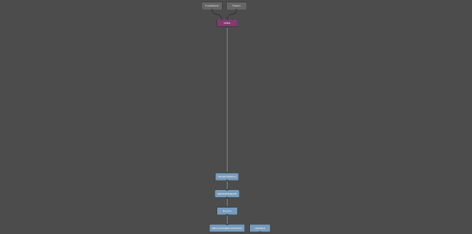
Now we have some space we can drop our shading nodes into.
- Make a Disney material (/Appleseed/Shader/Material/As_Disney_Material)
- Edit it using the NodeEditor
- Set the Specular to
0.6 - Set the Roughness to
0.35
- Set the Specular to
- Keeping the Disney material selected, create a ShaderAssignment (/Scene/Attributes/ShaderAssignment). Note that it has been automatically connected to the material.
- Left-Drag the ShaderAssignment onto the connection between the Group and StandardOptions nodes to insert it into the stream.
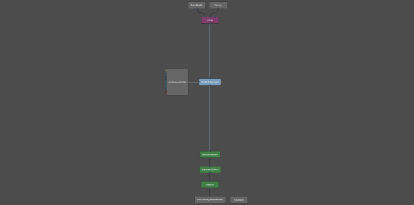
Note that the inputs and outputs on the material node flow from left to right. In Gaffer, by convention, scene data flows from top to bottom and shading networks flow from left to right. The ShaderAssignment node takes the material flowing in from the left and assigns it to the geometry flowing in from the top. This hasn’t done much to improve our render though - now that we have a proper material assigned, we need to to create a light so we can see it.
Creating a light¶
We’ll use an environment light so that we can get up and running quickly without needing to spend a lot of time tuning multiple lights.
- Create a PhysicalSky node (/Appleseed/Environment/PhysicalSky)
- Edit it using the NodeEditor
- Set the Sun Phi Angle to
100 - Set the Luminance to
2.5
- Set the Sun Phi Angle to
This node outputs a new scene containing a single light. As we did before with the camera, we now need to add the light to the main scene so that it flows down to the render node. The quickest way of doing this would be to connect it in to the next available input on the Group node, but this time we’ll take a different approach. Often when collaborating with others, you’ll receive scenes which already contain the geometry and cameras, and it’ll be inconvenient to use a Group node because it introduces a new level into the scene hierarchy. In these cases, we can use a Parent node to insert a new child anywhere in the input scene.
- Deselect the PhysicalSky node
- Create a Parent node (/Scene/Hierarchy/Parent)
- Left-Drag it between the Group and ShaderAssignment nodes to insert it.
- Enter
/in the Parent field in the NodeEditor, so that we’ll be parenting the light directly under the scene root. - Connect the output of the light node into the second (child) input of the Parent node.
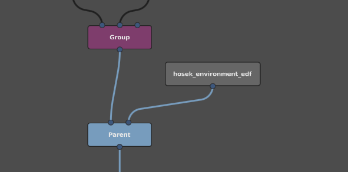
We should have successfully inserted the light into the scene hierarchy, without affecting the structure of the rest of the scene.
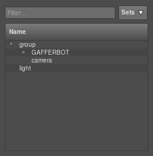
Now we need to enable environment lighting in Appleseed for our light to take effect.
- Edit the AppleseedOptions node in the NodeEditor
- Open the Environment section
- Turn on the Environment Light switch
- Enter
/lightinto the text field
Our render should now be in the process of updating with some basic lighting.
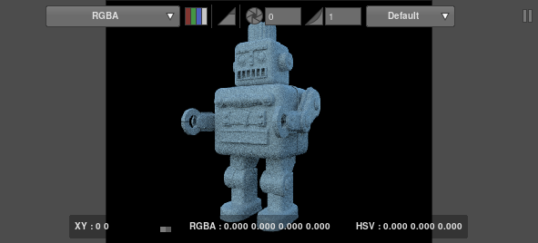
Adding some textures¶
Our little chap is looking a bit monochrome, so let’s assign some textures to cheer him up :
- Create an Appleseed texture node (/Appleseed/Shaders/Texture2d/As_color_texture)
- Edit it using the NodeEditor
- Enter
${GAFFER_ROOT}/resources/gafferBot/textures/base_COL/base_COL_into the Filename field. - Set the UDIM field to
mari.
- Enter
- Using the GraphEditor, Connect the ColorOut output into the BaseColor input of the disney material.
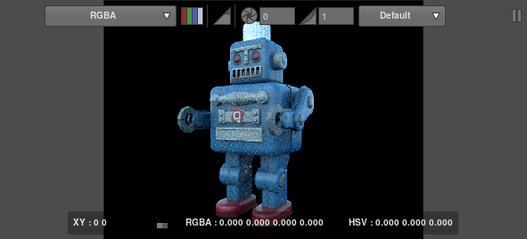
The render should now be in the process of updating to show the results of our edit.
Filtering a shader assignment¶
Everything is looking rather uniform right now, because so far we’ve used one material for everything. Let’s assign a metallic material to a few objects to add some interest.
- Make a Disney material as before (/Appleseed/Shader/Material/As_Disney_Material)
- Edit it using the NodeEditor
- Set Metallic to
0.8 - Set Roughness to
0.4
- Set Metallic to
- Create a Shader assignment as before (/Scene/Attributes/ShaderAssignment), and make sure the new material is connected into it.
- Insert the new ShaderAssignment into the connection below the previous one.
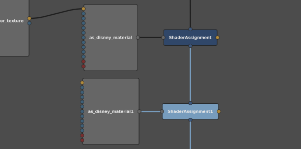
The viewer should update to show the new assignment.
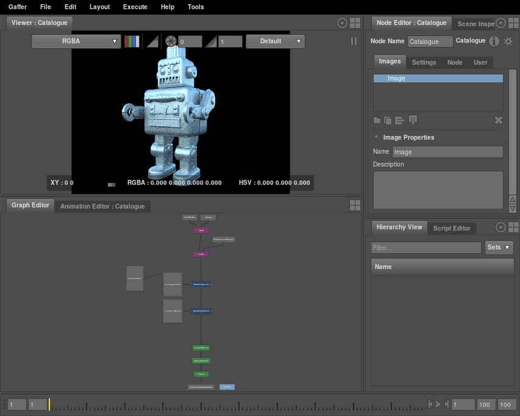
Oops. Because the new ShaderAssignment is downstream from the first one, it has overridden the first assignment, and now everything is chrome. We need a way of limiting the objects that the second ShaderAssignment is applied to - in Gaffer this is referred to as filtering the ShaderAssignment, and it is done using special Filter nodes :
- Create a PathFilter node (/Scene/Filters/PathFilter). This chooses which objects to affect based on their names.
- Use the NodeEditor to add
/group/GAFFERBOT/C_torso_GRP/C_head_GRP/C_head_CPT/L_ear001_RENto the Paths. This is the full name of the left ear of the robot, as you see it listed in the HierarchyView. - Connect the output of the PathFilter into the filter input on the right hand side of the ShaderAssignment1 node.
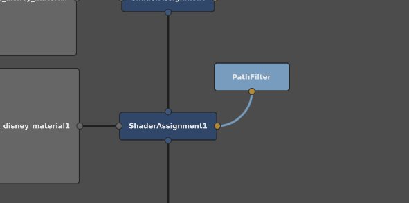
The render should now update, with the chrome shader applied only to the ear.
Editing the filter¶
We might like to apply the chrome shader to more objects, but it’ll be a bit tedious to continue entering object names manually as we just did. First, let’s use Gaffer’s pattern matching to pick both ears :
- Select the PathFilter node to edit it in the NodeEditor
- Delete
L_ear001_RENat the end of the path we entered previously, and replace it with*_ear*
The * automatically matches any sequence of characters, so the filter will now match the left and the right ears. We’re still some way from chromifying everything we want to though, so let’s take a look at using a more visual approach.
- In the Viewer panel, switch to the tab containing the 3d view.
- Hold down Alt and use the camera navigation controls to frame the face.
- Select the eyebrows by Left-Clicking on them.
- Add the mouth to the selection by Shift + Left-Clicking on it.
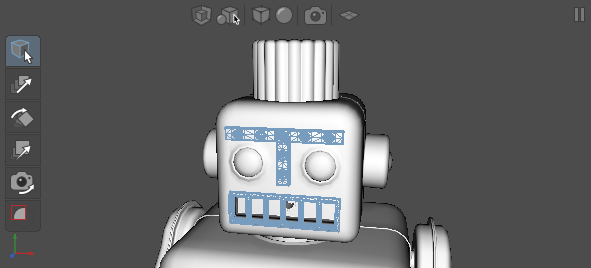
- Start a Left-Drag from the selected objects. The cursor should change to to indicate you are dragging them.
- Continue the drag into the GraphEditor and hover over the PathFilter node.
- Hold Shift to indicate that you wish to add to the PathFilter rather than replace the existing contents. The cursor will change from to to indicate this.
- Finally, drop the objects to add them to the PathFilter.
Just as objects can be added by holding Shift, they can be removed by holding Control. With this in mind, we can add and remove objects from the shader assignment to taste, switching tabs to view the rendered image as it updates. After adding the grabbers and bolts to the filter, we should arrive at an image something like the following.
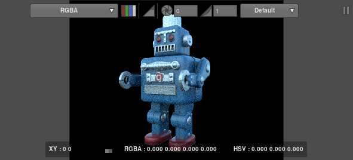
Recap¶
There is no doubt still a lot that could be done to improve our render, but alas, at this point your faithful author finds himself at the limits of his meagre artistic ability. We’ve seen how Gaffer allows caches to be loaded and navigated lazily on demand. We’ve seen how to create lights and cameras and combine them into a scene for rendering. We’ve demonstrated how to rearrange the UI for improved interaction, and we’ve seen how shading networks can be constructed and assigned.
Hopefully this provides a solid basis for your own further exploration, which will no doubt be less creatively challenged. You might like to start by exploring the addition of more lights, found in the /Appleseed/Lights node menu, or by creating more expansive shading networks using the shaders found in the /Appleseed/Shaders node menu.